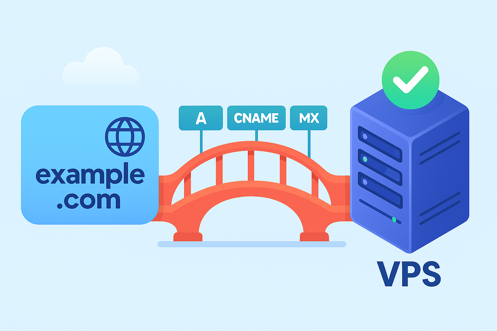

Déploiment
Configuration d’un serveur distant et mise en ligne d’une application web.

Langage : Shell, nginx conf
Technologies : VPS OVH cloud, certbot et nginx principalement
Projet : Perso
Le projet
Le projet etait surtout d'avoir une vraie experience dans l'infrastructure et réseau, avec toutes les notions de sécurité qui en suivent. De plus, ca me permet d'heberger certains autres projets du portfolio, trouvable par le lien https://gaeym.com
Le nom de domaine et le VPS ont été loué sur OVH Cloud, et les configurations de sécurité viennent aussi majoritairement de ce dernier fournisseur. Le certificat TLS vient de certbot (commande linux, open source)
← Retour aux projets